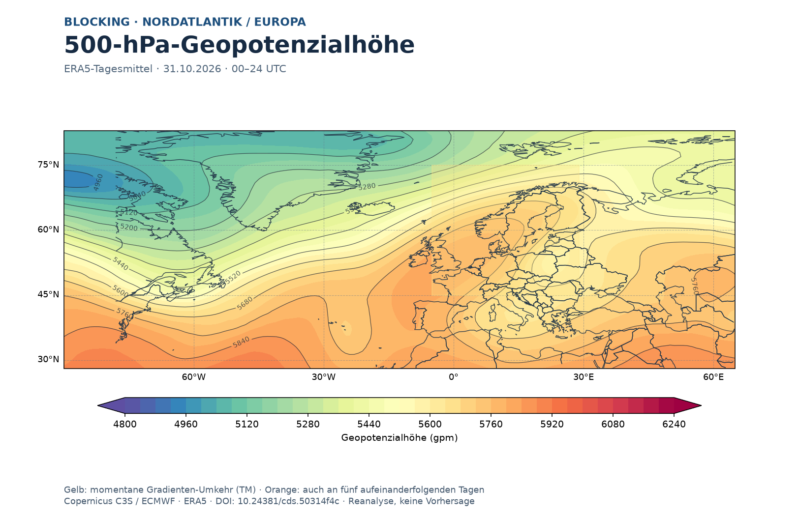

Nordatlantische & Arktische Oszillation
Die täglichen NAO- und AO-Indizes des NOAA Climate Prediction Center seit 1950. Vergleiche positive und negative Phasen, beobachte die langfristige Variabilität und untersuche beide Zirkulationsindizes gemeinsam.
Verlauf der Zirkulationsindizes
Positive und negative Phasen sind Vorzeichen der normalisierten Indizes. Die Monatsmittel dieser Seite werden aus den beobachteten CPC-Tagesindizes gebildet; das sind nicht die separat veröffentlichten CPC-Monatsreihen. Zeitreihen enthalten keine Modellprognose.
NAO-/AO-Prognosemonitor · NOAA/CPC
Echte tägliche GEFS-Ensembleprognosen und GFS-Hauptlauf für 0–15 Tage, unmittelbar mit den CPC-Beobachtungen vergleichbar. Die 31 Ensemblemitglieder, das 10.–90. Perzentil und die Wahrscheinlichkeiten werden aus den offiziellen Zahlen berechnet – keine Schätzungen aus Prognosebildern.
Prognosedaten werden aus offiziellen CPC-CSV-Dateien bei erfolgreicher Datenprüfung veröffentlicht.
Zur Prognosegüte: NAO nutzt eine Projektion von 500-hPa-Geopotenzialanomalien, AO von 1000-hPa-Geopotenzialanomalien. GEFS und GFS nutzen hier die gemeinsame NOAA/CPC-Indexdefinition. Ein direkter ECMWF-/EPS-Vergleich wird erst nach einer nachvollziehbar angeglichenen Indexberechnung angeboten. Null bedeutet Index-neutral, nicht automatisch schwaches Blocking.
Quelle: NOAA/CPC · offizielle Ensemble- und Analyse-CSV. Einheiten: standardisierter CPC-Index. Werte können revidiert werden, Laufzeiten sind als Datum ausgewiesen (keine nicht belegten Uhrzeiten). PDF-Kurven werden als getrennte Vektorelemente erzeugt.
Zirkulationskarten zur meteorologischen Einordnung
ECMWF IFS-ENS · reale räumliche Prognosefelder
Direkt aus dem 0,25°-Ensemble-Mittelfeld von ECMWF: 500-hPa-Geopotenzial über dem Nordatlantik und Europa, 1000-hPa-Geopotenzial über der Nordhemisphäre. Gezeigt werden absolute Geopotenzialhöhen in gpm und keine NAO-/AO-Indexanomalien. Die Farbskala bleibt je Niveau für alle Vorhersagetermine gleich.
Nur überprüfte reale ECMWF-Modelldaten werden eingeblendet. Ohne verfügbare Karte bleibt die Darstellung leer.
500 hPa · Nordatlantik / Europa
ERA5-Analyse, keine Prognose: die bestehende Blocking-Karte zeigt Höhenfeld und persistente Zirkulationsanomalien. Sie ist ein räumlicher Kontext für die NAO, aber keine aus dem NAO-Wert abgeleitete Wetterkarte.

1000 hPa · arktische Oszillation
Die AO wird vom CPC aus großräumigen 1000-hPa-Geopotenzialanomalien bestimmt. Die numerische Ensemblevorhersage ist oben enthalten; das oben auswählbare ECMWF-1000-hPa-Mittelfeld dient als zusätzlicher räumlicher Kontext. Es ist keine Indexprojektion und keine Anomalienkarte.
Was ist die NAO?
Die Nordatlantische Oszillation beschreibt charakteristische Schwankungen der atmosphärischen Zirkulation über dem Nordatlantik. Eine positive NAO-Phase ist häufig mit ausgeprägter Westdrift in den mittleren Breiten verbunden, besonders im Winter.
Die Wirkung auf einzelne Regionen und Jahreszeiten ist nicht deterministisch.
Was ist die AO?
Die Arktische Oszillation erfasst einen großräumigen Modus der atmosphärischen Zirkulation der Nordhemisphäre. AO und NAO sind verwandt, aber nicht identisch.
Dargestellt sind die vom NOAA CPC veröffentlichten standardisierten Beobachtungsindizes.
Blocking-Monitor
Neu: 500-hPa-Blocking-Karte für Nordatlantik und Europa mit täglicher ERA5-Analyse, objektiven Gradienten-Indikatoren und fünf Tagen Persistenz. NAO, AO und GBI bleiben unabhängige Zirkulationsindizes.
Weitere Analysen
Mögliche nächste Stufe: Tage mit AO−/NAO− gegen Deutschland-Temperaturanomalien und ERA5-Zirkulationskarten vergleichen. Eine solche Verknüpfung erfordert saubere, zeitsynchrone Tagesdaten und ist hier noch nicht als fertige Statistik enthalten.